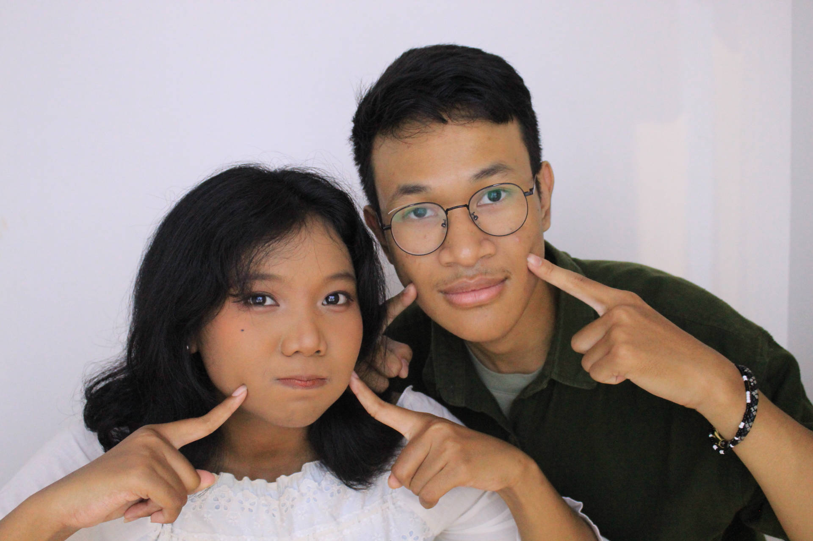
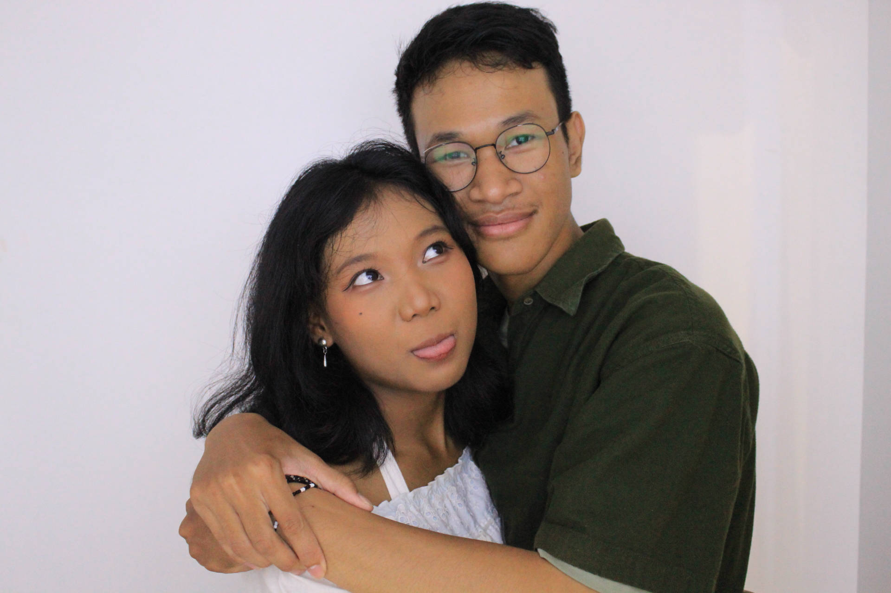
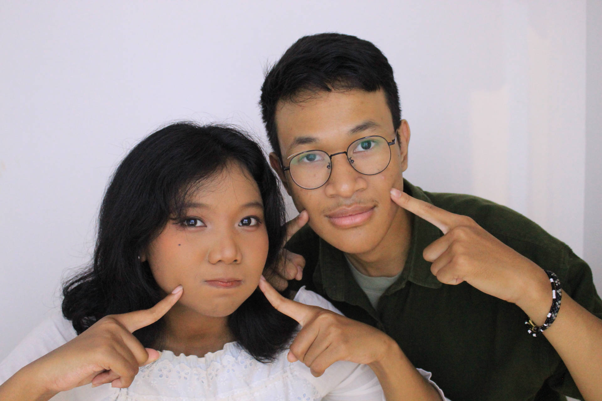
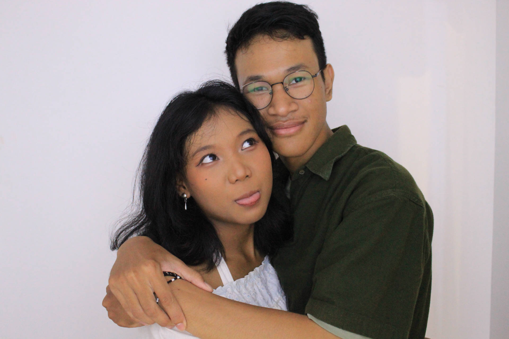

Dear Sekar,
Aku merasa sangat beruntung bisa mengenalmu. Sejak pertama kali kita mulai berbicara, ada sesuatu yang terasa berbeda. Mungkin karena kamu punya cara yang unik untuk membuat aku merasa nyaman dan diterima, bahkan ketika biasanya aku merasa seperti tidak ada apa-apanya.
Kamu itu seperti rumah buatku. Di saat-saat aku bingung atau dunia terasa berat, kamu hadir dan memberi rasa tenang yang nggak bisa aku dapatkan dari tempat lain. Kamu nggak hanya peduli, tapi juga benar-benar memahami dan itu luar biasa.
Sekarang, sambil aku menulis ini, lagu favoritmu, Jemari, sedang terputar di latar belakang. Entah kenapa, mendengarnya membuat aku merasa lebih dekat denganmu, seolah-olah kamu ada di sini, meskipun kita terpisah jarak. Itu hanya satu dari banyak hal kecil yang selalu mengingatkan aku betapa pentingnya kamu dalam hidupku.
Aku juga ingat, di layar sebelah kanan ini, ada foto kita berdua di photobooth waktu kita jalan bareng. Itu salah satu momen sederhana tapi sangat berarti kita cuma tersenyum, berpose konyol, dan sejenak lupa tentang dunia di luar sana. Foto itu menjadi kenangan kecil yang bikin aku senang setiap kali lihat, karena itu adalah bagian dari kisah kita.
Pada Februari lalu, kamu mengajak aku untuk menjadi pasangan, dan aku benar-benar merasa beruntung bisa bersama kamu. Cinta kita bukan hanya tentang momen indah, tapi juga tentang cara kamu membuat aku merasa berarti.
Nana, aku tahu kamu lagi sibuk dengan tugas akhir dan persiapan UTBK. Aku cuma mau bilang, aku selalu mendoakan yang terbaik buatmu. Semoga tugas akhir kamu bisa lancar dan hasil UTBK-mu memuaskan, seperti yang kamu harapkan. Dan kalaupun hasilnya nggak sesuai dengan yang diinginkan, jangan pernah merasa putus asa. Aku ada di sini, selalu siap mendukung dan menemanimu. Semua ini cuma bagian dari perjalanan, dan aku percaya masa depanmu penuh dengan hal-hal indah.
Meskipun kita sering terpisah jarak, setiap obrolan, setiap game yang kita mainkan, dan setiap cerita yang kita bagi selalu membuat aku merasa lebih hidup. Aku cuma ingin kamu tahu, Nana, cintaku padamu nggak akan pernah berubah. Aku juga berharap kita bisa terus bersama, melewati setiap langkah hidup ini bersama. Semoga kita bisa selalu menjaga cinta ini, apapun yang terjadi, dan tetap ada untuk satu sama lain, meski jarak kadang memisahkan.
Terima kasih sudah menjadi bagian dari hidupku dan menunjukkan bahwa cinta yang sejati itu ada dan itu adalah kamu. Aku mencintaimu, lebih dari yang bisa aku ungkapkan.
"Love isn’t about finding someone to live with, it’s about finding someone you can’t imagine living without."
With Love,
Indra
 


